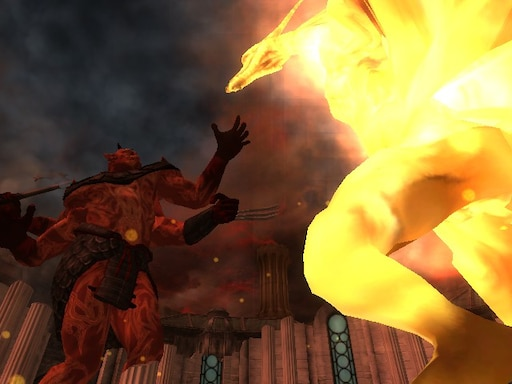

50 Year Anniversary of Oblivion Crisis.
Statue of Akatosh in the ruin of the Temple of the One in the Imperial City
Today, the 28th of Last Seed marks the 50th year anniversay of the beginning of the Oblivion Crisis. The Oblivion Crisis marks the lowest point in our great Empires history and was the greatest threat to all of Nirn in the 3rd Era. On this 50 years ago the Emperor Uriel Septim VII and all of his heirs was assassinated by the Mythic Dawn cult, dedicated the the Daedric Prince of destruction, revolution and ambitions, Mehrunes Dagon. With the Emperor and his line seemingly over, the keader of the Mythic Dawn cult, Mankar Camoran was now in possession of the Amulet of Kings, an ancient artifact that dates back to the 1st Era and has been worn by every Emperor of Cyrodiil. It was said that at the formation of the First Empire the dragon god of time and chief of the 9 Divines, Akatosh formed a pact with Alessia the slave Queen, in which he gifted to her a red diamond shaped jewel and stated that as long as those with the dragon blood wore this amulet and ruled the Empire the Cyrodiil, and as long as the dragon fires stayed alight in the Imperial City the world would be safe from all Daedric threats and invasions.
With the Emperor dead and the dragon fires cold, Mankar Camoran fled into his Paradise, a pocket realm of Oblivion created with powers gifted to him by the Prince of ambition himself, with the amulet of kings and in that single moment the Empire seemed defeated and the entire fate of the world was on the brink. Oblivion Gates then began to open around every major city of Croydiil, when all hope seemed lost a champion emerged from the ruin of Kvatch with the forgotten final heir of the Septim line, an illigitimate son Martin Septim, whose existence before this was known only by the Emperor himself. The Champion of Cyrodiil then journeyed across the entire heartland of Tamriel, going inside of the portals to which dremora would pour out from threatening the cities and surrounding areas and closing them by some means. after all of the Oblivion gates around Cyrodiil had been closed, through the leadership and wisdom of Martin Septim and his loyal Blades, the secret service and personal guard to the Emperor, they manged to send the Champion of Cyrodiil into Mankar Camorans pocket dimension of Paradise alone. There they faced many trails but eventually reached the heart of Paradise, in the throne room the Champion of Crodiil faced Mehrunes Dagons champion, Mankar Cameron wearing the Amulet of Kings. The Champion of Crodiil slayed Cameron effectively destroying Paradise and the Mythic Dawn cult.
Stained glass depiction of the Avatar of Akatosh
The Amulet of Kings now returned to Martin Septim, the Champion of Cyrodiil then escorted the Emperor to the White Gold throne in the Imperial City to re-light the dragon fires and end the Daedric invasions. Just as they had arrived in the city, a great Oblivion gate opened in the temple district of the Imperial City, left with little other options Martin directed all of the city guard along with the remaining Blades and the Champion of Cyrodiil to cut a path to the Temple of the One to re-light the fires. Upon reaching the temple the Prince of Destruction, Mehrunes Dagon had materialized into Mundus in a gigantic form in order to complete his conquest himself. When panic had set in and all hope seemed lost, Martin Septim sacrificed both himself and the Amulet of Kings to transform into a fiery avatar of Akatosh and banish Mehrunes Dagon and any further Daedric threat or invasion ever again regardless of Emperor or Amulet, Closing the jaws of Oblivion forever. The Champion of Cyrodiil was last seen entering a recently opened portal to the Daedric Prince of Madness, Sheogoraths realm, the Shivering Isles. The portal shut shortly after they entered. They were never seen again. This event marked the end of the Oblivion crisis, though Martin reign was short he proved to be one of the wisest of all Septims. Hard times have befallen the Empire since the end of the Septim line, may Martins spirit watch over us as we enter the 4th Era.
Mehrunes Dagon and the Avatar of Akatosh battling in the Temple of the One.
Hail, Dragonborn! Hail, Martin Septim!